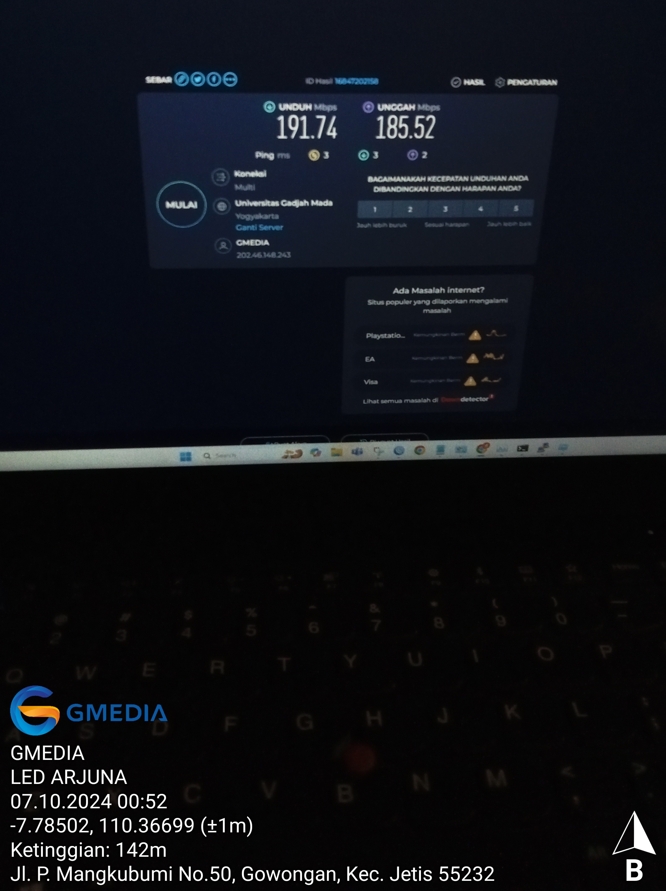
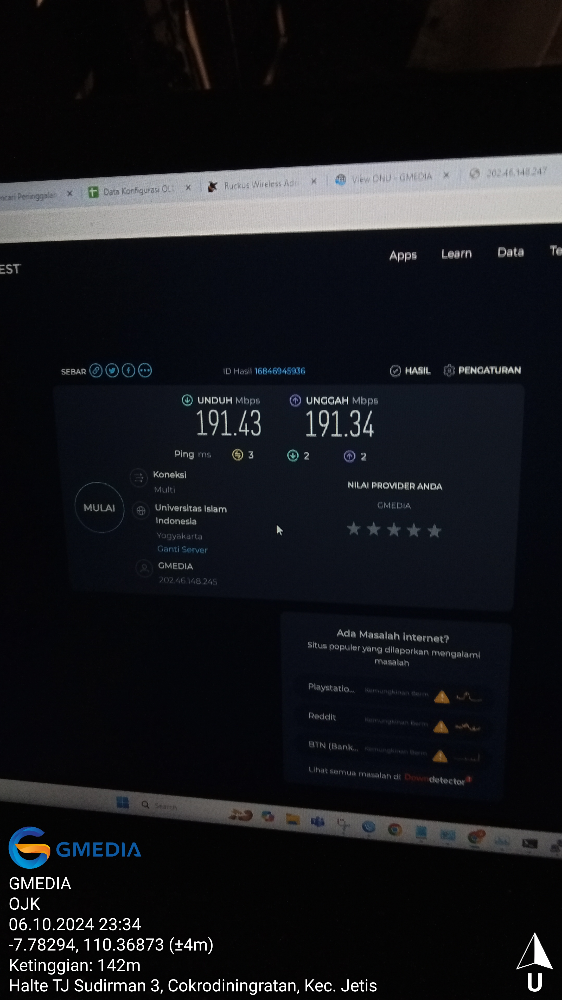

Project Overview
Wayang Jogja Night Carnival required stable internet connectivity to support live YouTube streaming and videotron displays across multiple locations during the event.
{kind=link}
The project involved modem installation, configuration, and EOS (Event Operation System) monitoring, ensuring uninterrupted connectivity for four videotron points:
- Videotron Arjuna
- Videotron Money Changer
- Videotron OJK
- Videotron Finish Line
Table of Contents
Deployment Scope
- Event: Wayang Jogja Night Carnival
- Installed Equipment:
- Modems at four key locations
- EOS monitoring systems
- Connectivity Purpose:
- Live YouTube streaming
- Videotron display content
- Monitoring: Continuous supervision during the event
- Team Coordination: Worked closely with WJNC Event Crew and NOC Team to ensure smooth deployment and real-time troubleshooting.
| Location | Documentation |
|---|---|
| Videotron Arjuna |

|
|  | |
| Videotron Money Changer |

|

|
|
| Videotron OJK |

|
|  | |
| Videotron Finish Line |

|

|
{kind=link}
{kind=link}
Responsibilities
- Modem Installation: Installed and activated modems at each designated point.
- EOS Monitoring: Monitored internet performance, connectivity, and live streaming stability throughout the event.
- Connectivity Validation: Ensured all videotron screens and live streaming operated without interruption.
Implementation Details
Physical Installation
- Deployed modems at four key points according to event layout.
- Ensured proper power and network cabling for each device.
Network Configuration
- Activated modems and verified internet connectivity via PPPoE client setup at each location.
- Configured LAN network for videotron displays, crew devices, and EOS monitoring systems.
- Ensured proper IP addressing, gateway, and DNS settings for all connected devices.
- Configured EOS monitoring to track real-time internet stability and LAN performance.
- Verified that all videotron units and live streaming equipment could communicate reliably over the network.
Event Monitoring
- Monitored live streams and videotron feeds continuously during the carnival.
- Responded promptly to any connectivity alerts to maintain smooth operations.
Tools & Technologies
- Modems (4 units)
- EOS Monitoring System
- Ping Monitoring Tools for real-time connectivity checks
- Cacti for bandwidth and network usage monitoring
- Ethernet and power cabling for devices
- Live streaming setup for YouTube
Network Analysis
- Reliability: Stable connectivity ensured uninterrupted live streaming.
- Coverage: Four key points fully connected and operational.
- Operational Efficiency: EOS monitoring allowed proactive issue handling.
Outcome
- Successfully delivered stable internet connectivity for live streaming and videotron displays.
- Achieved zero downtime throughout the event.
- Demonstrated hands-on experience in event networking and real-time monitoring.